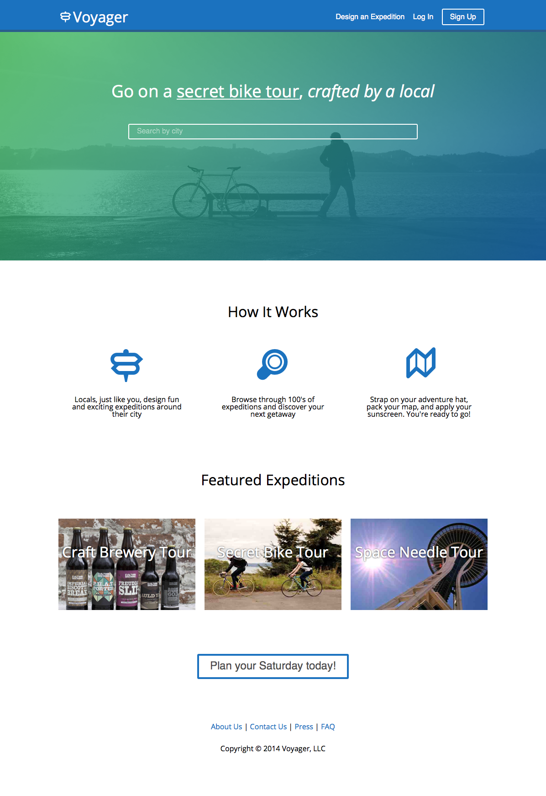
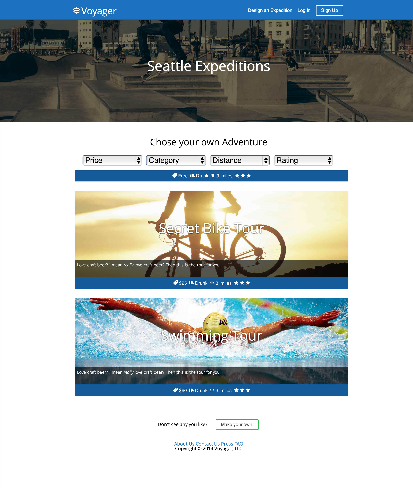
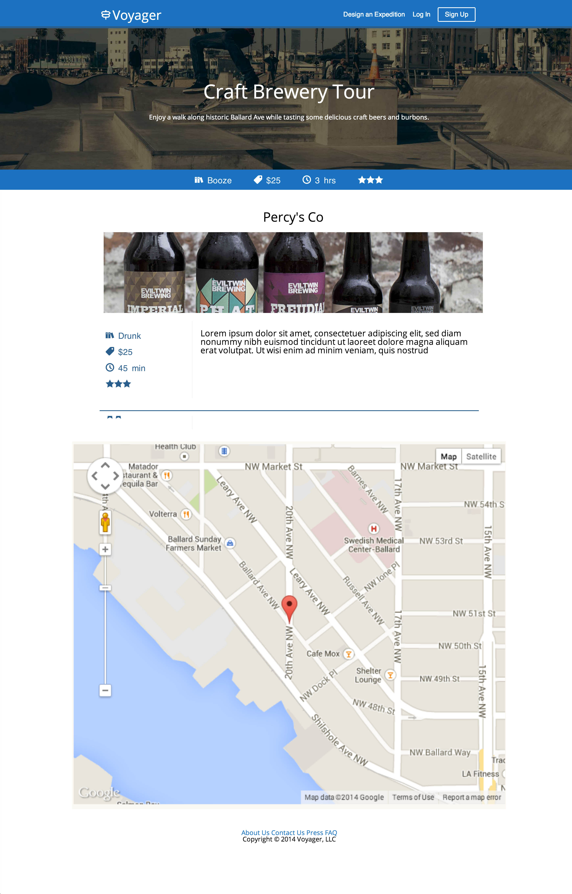

During the Code Fellows UX Engineering Bootcamp, we were instructed to form teams of three to build a clickable web application prototype in four days. After brainstorming different ideas, we decided on Voyager. As a result of the time constraint, my team decided to build out three core pages: the home page, a city listings page, and an expedition details page.
Here is our process:
Workflow
Using tools like Trello and Graphviz, we were able to stay on task and have a constant line of communication. Graphviz allowed us to visually see our application's workflow and pinpoint the key areas of development. Trello allowed us to stay updated with the team's progress in a clean and fluid environment.
Wireframes
Utilizing a mobile-first stategy, I began sketching out our wireframes.
Style Guide
We designed a style guide to add consistency to our project. Thinking of the user, we went with a modern easy-to-read font, Open Sans, and picked nature/outdoors colors to go with Voyager's Exploration aesthetic.
Design with Code
To start builing our project, we employed pair programming to build out a semantic HTML structure using Skeleton Grid.

After the core HTML structure was in place, we began to incorporate design elements in CSS, incorporating elements from the style guide throughout. jQuery was then used to add interactivity to our prototype. The finished results can be seen below.


